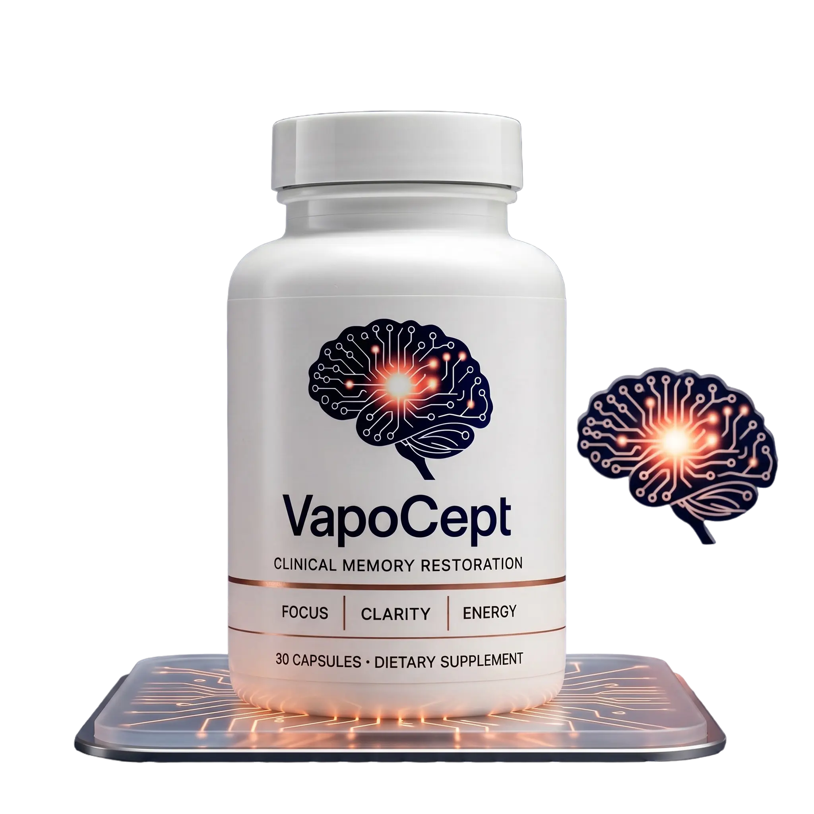
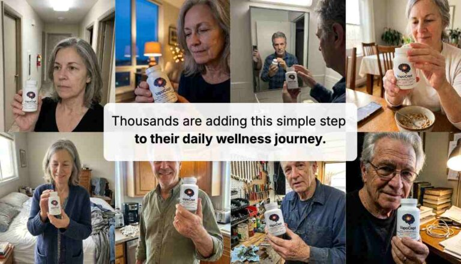
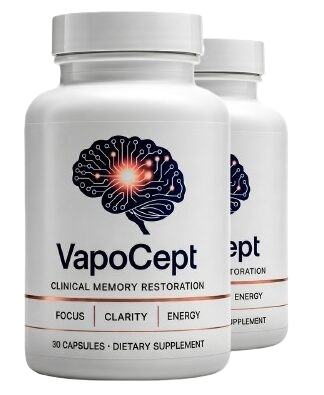
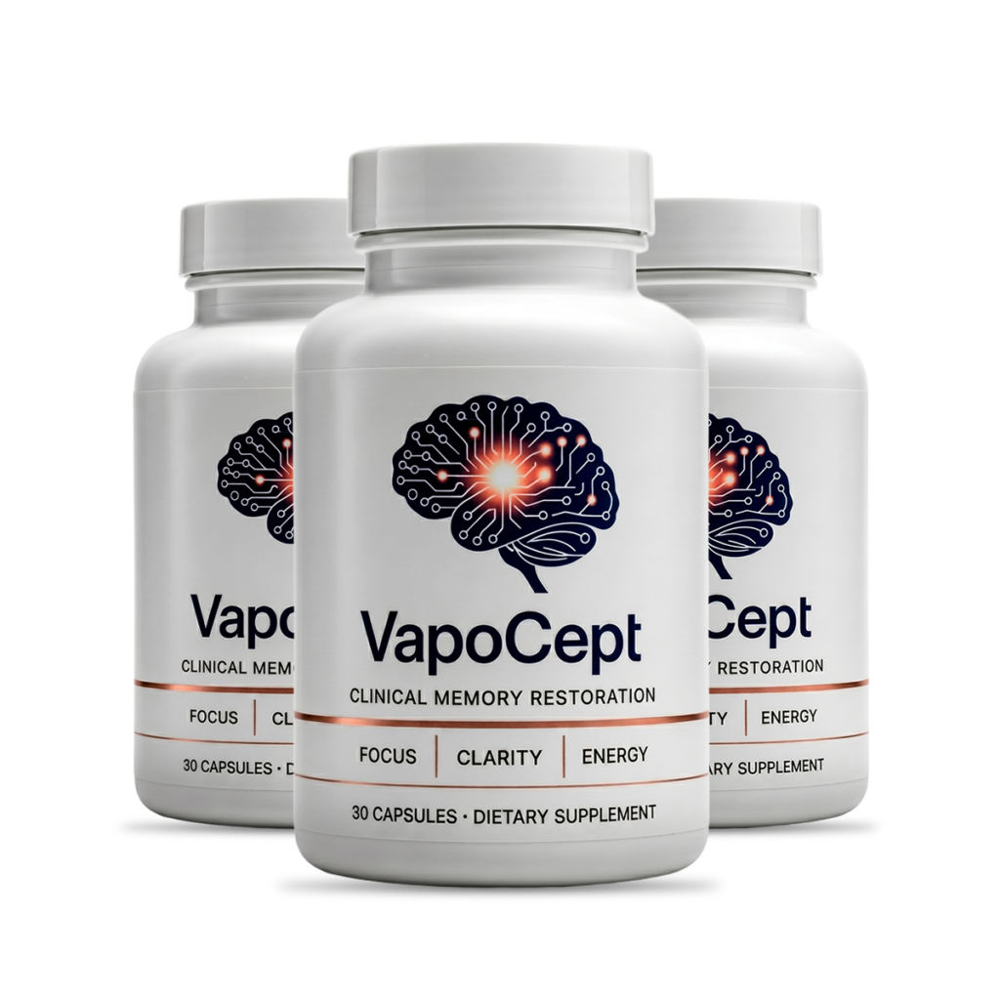
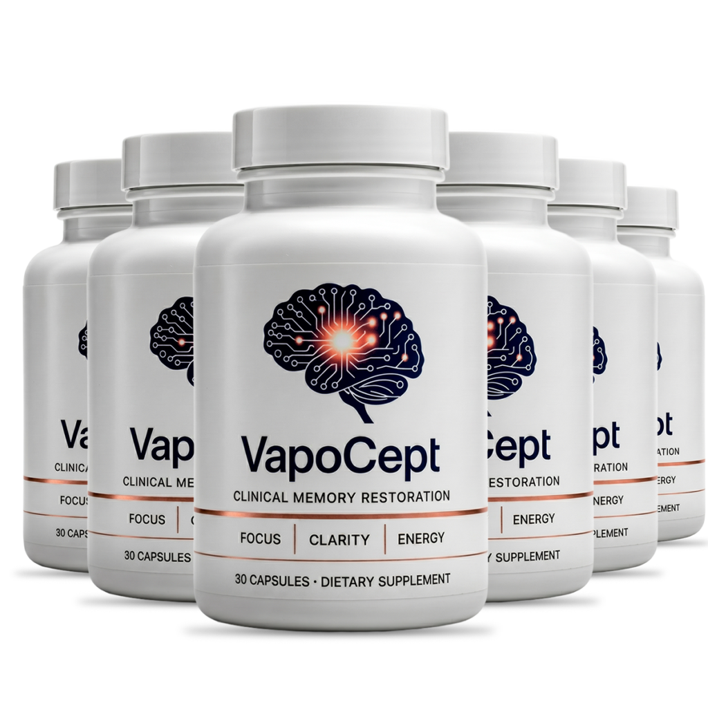
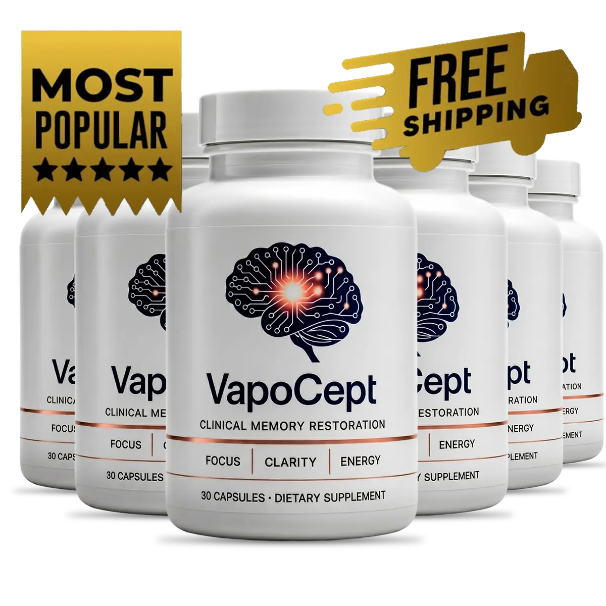

Cognitive Support Built on Circulation, Not Caffeine.
True mental clarity requires a steady supply of oxygen and cellular energy — not a synthetic jolt that fades by noon. VapoCept delivers six targeted, non-stimulant nutrients designed to support healthy cerebral blood flow, sustain cellular energy production, and defend against oxidative stress throughout your entire day. No jitters. No crash. Just consistent, foundational support for the brain you rely on every single hour.

The 30-Second Breakdown
Before you dive into the science, here's everything you need to know about VapoCept in four quick points.
6 Targeted Nutrients
Precisely dosed per capsule with zero proprietary blends hiding the amounts. Every ingredient is named, and every ingredient has a specific, defined physiological role in the formula.
100% Non-Stimulant
No caffeine, no synthetic stimulants, no jittery energy spikes. VapoCept works through circulation and cellular energy pathways, delivering a smooth, consistent daily routine without the dreaded afternoon crash.
60-Day Guarantee
Every single order is backed by a full 60-day money-back guarantee from your date of purchase. If the formula isn't the right fit, you can request a complete refund — no questions, no hassle, no financial risk.
cGMP Certified Facility
Manufactured in the United States inside an FDA-inspected, cGMP-certified facility. The formula is non-GMO, gluten-free, and packaged in BPA-free materials for quality you can trust from capsule to bottle.
Beyond the Marketing: What Is VapoCept?
Your brain doesn't need a synthetic jolt; it requires consistent, optimal conditions to function at its best. VapoCept is engineered around this fundamental principle.

Most cognitive supplements on the market today lean heavily on one strategy: flood your system with caffeine or synthetic stimulants and hope the resulting spike feels like "focus." The problem is that this approach doesn't address why your brain feels foggy in the first place. It masks the symptom temporarily while doing nothing for the underlying physiology.
VapoCept takes a fundamentally different approach. Instead of relying on a single trendy ingredient, this formula distributes its efficacy across four specialized amino-acid compounds, a critical B-vitamin, and a targeted antioxidant supporter. Together, they address the three primary physiological factors that influence cognitive performance as we age: circulation, cellular energy, and oxidative defense.
The result is a formula that doesn't promise overnight miracles or dramatic "limitless" effects. Instead, it offers something more honest and more sustainable: a daily dietary supplement designed to be integrated seamlessly into your morning routine, supporting your broader brain health lifestyle week after week and month after month.
Nitric oxide pathway support for healthy cerebral circulation
NAD+ precursor support for sustained cellular energy
Carnosine-linked antioxidant protection against oxidative stress
How to Use VapoCept
No complicated dosing schedules, no midday reminders, no multi-capsule routines. VapoCept was designed to be the simplest part of your morning.
Take One Capsule Daily
Take one capsule with a full glass of water, ideally alongside your breakfast. Anchoring it to an existing habit — like your morning coffee or your first meal — makes consistency effortless. Each bottle contains 30 capsules, exactly one month's supply.
Allow 3–4 Weeks to Build
VapoCept supports foundational physiological processes like nitric oxide production and NAD+ synthesis. These pathways don't change overnight. Plan on 3 to 4 weeks of consistent daily use before you start evaluating the shifts in your mental clarity, focus, and afternoon energy levels.
Enjoy Sustained Daily Support
With zero stimulants, there's no afternoon crash to plan around. The formula is designed to provide steady, ongoing support for circulation and cellular energy as part of your long-term brain health routine — complementing quality sleep, regular movement, and a nutrient-dense diet.
💡 Pro Tip: Don't double up if you miss a day. A skipped dose happens to everyone — just take your normal single capsule the next morning. Taking two at once doesn't accelerate results and simply shortens your bottle. Consistency over weeks matters far more than any single dose.
Why VapoCept Stands Apart
Most cognitive supplements lean heavily on caffeine for a short-lived spike. VapoCept targets the underlying physiology that determines how well your brain performs hour after hour.
Optimizes Circulation, Not Stimulation
L-Arginine and its bonded AKG extract support the body's natural nitric oxide pathways, promoting healthy vascular relaxation and improved blood flow to brain tissue. Unlike caffeine-based products that force a temporary alertness spike, this approach works with your body's own circulatory system — delivering oxygen and nutrients where they're needed most, without the dreaded afternoon crash that leaves you feeling worse than before.
Sustained Release, Not a Spike
L-Citrulline HCL is uniquely efficient at recycling back into arginine through the kidneys, creating a sustained, gradual support system for the nitric oxide pathway that lasts throughout the day rather than peaking and fading within an hour. This "arginine-citrulline cycle" is one of the most well-documented mechanisms in amino acid research, and it's a key reason VapoCept uses both compounds together rather than relying on either one alone.
Fuels the Cellular Power Plant
Niacin (Vitamin B3) acts as a direct biochemical precursor to NAD+, a vital coenzyme that every single brain cell relies on for continuous, stable energy production. Brain cells are among the most energy-demanding cells in the entire body, and when NAD+ levels decline — a well-documented part of the aging process — cognitive performance can suffer. By supporting NAD+ production, VapoCept addresses energy at the cellular level rather than masking fatigue with stimulants.
Adds an Antioxidant Defense Layer
Beta-Alanine helps maintain healthy carnosine levels in the body, and carnosine has been studied extensively for its antioxidant properties. Every day, your brain cells face oxidative stress from normal metabolic activity, environmental factors, and the simple process of aging. By supporting carnosine levels, VapoCept adds a well-researched layer of antioxidant protection that works silently in the background, defending cellular integrity over the long term.
Complete Transparency: Inside Every Capsule
Six distinct ingredients, each with a clearly defined physiological role. No hidden proprietary blends, no mystery compounds, no filler ingredients. Just a focused formula built around circulation, energy, and defense.
| Ingredient | Type | Primary Role in the Formula |
|---|---|---|
| L-Arginine | Amino Acid | The body's direct precursor to nitric oxide, a signaling molecule that helps blood vessels relax and widen. Foundational for healthy circulation, including blood flow to brain tissue. |
| L-Arginine AKG 2:1 Extract | Bonded Amino-Acid Extract | Alpha-ketoglutarate bonded arginine designed for slower, more sustained release. Extends circulatory support consistently throughout the day rather than delivering a single short-lived spike. |
| L-Citrulline HCL | Amino Acid | Efficiently recycles into arginine via the kidneys through the arginine-citrulline cycle. Research suggests oral citrulline may raise blood arginine levels more effectively than arginine itself by bypassing first-pass gut metabolism. |
| L-Citrulline Malate | Amino Acid Compound | Combines the circulatory support of citrulline with malic acid's direct role in the Krebs cycle, linking blood flow support to cellular energy metabolism in a single compound. |
| Niacin (Vitamin B3) | B-Vitamin | A crucial biochemical precursor to NAD+ (nicotinamide adenine dinucleotide), a coenzyme central to cellular energy production in every brain cell. NAD+ levels naturally decline with age. |
| Beta-Alanine | Amino Acid | The rate-limiting precursor to carnosine, a dipeptide studied for its robust antioxidant properties. Supports the body's natural defense against everyday oxidative stress that accumulates over time. |
VapoCept vs. Typical Stimulant "Brain Pills"
Not all cognitive supplements are built the same way. Here's how VapoCept's approach compares to the stimulant-heavy formulas that dominate the market.
| Feature | VapoCept® | Typical Stimulant Blends |
|---|---|---|
| Primary Mechanism | Nitric Oxide & Cellular Energy Support | High-Dose Caffeine / Synthetic Stimulants |
| Afternoon Crash Risk | None (100% Non-Stimulant) | High — often worse than baseline |
| Ingredient Transparency | All 6 Ingredients Fully Disclosed | Often Hidden in "Proprietary Blends" |
| Duration of Effect | Sustained Daily Foundational Support | Short-Term Acute Spike (1–3 hours) |
| Manufacturing Standard | USA, FDA-Inspected, cGMP-Certified | Varies Widely by Brand |
| Daily Dosing | One Capsule with Breakfast | Often Multiple Doses Throughout the Day |
| Money-Back Guarantee | 60 Days, Full Refund | Varies; Often 30 Days or Less |
Invest in Your Cognitive Foundation
Multi-bottle packages offer the deepest per-bottle savings and ensure you have enough time to experience the formula's full potential. Remember: the most commonly reported benefits begin appearing around weeks 3–4.

2 Bottles
60-Day Supply
- ✓ 60-Day Money-Back Guarantee
- ✓ Standard Shipping

3 Bottles
90-Day Supply
- ✓ 60-Day Money-Back Guarantee
- ✓ Free US Shipping

6 Bottles
180-Day Supply
- ✓ 60-Day Money-Back Guarantee
- ✓ Free US Shipping
*The $49-per-bottle rate is exclusively available on the 6-bottle package while current promotional pricing is active. Prices are set by the seller and subject to change.

Our 60-Day Ironclad Guarantee
Every VapoCept order — whether a single bottle or a six-pack — is protected by a full 60-day money-back guarantee from your date of purchase. If you decide this formula isn't the right fit for your routine, simply follow the refund process outlined in your order confirmation. We believe in removing the financial risk entirely so you can evaluate the product with complete peace of mind. No hoops, no pressure, no hard feelings. The guarantee exists because we're confident in the formula, but we also know that every individual's physiology is different.
What Users Are Saying
Real feedback from individuals who have integrated VapoCept into their daily routines and experienced the formula's gradual, foundational approach to cognitive support.
Focus and the Afternoon Fog
"Week three is when the 3 pm fog started lifting. Subtle, but I noticed it before anyone pointed it out. I wasn't expecting a dramatic shift, and that's exactly what made it feel real — it was gradual and consistent, not a one-day wonder that disappeared by Thursday."
Steadier Word Recall
"Recall is steadier rather than sharper overnight, if that makes sense. Fewer blanks mid-sentence during work calls. I used to lose my train of thought constantly in meetings, and around week four I realized it had been days since that happened. It's not dramatic, but it's meaningful."
Less Draining Documentation
"Long documentation reads feel less draining. I stopped re-reading the same paragraph three times just to absorb it. I also appreciate that it's one capsule with breakfast and I'm done — I've quit other products because I kept forgetting the second or third daily dose."
Individual experiences with any dietary supplement vary. These reviews reflect genuine user feedback and are not a guarantee of specific results. Your experience may differ.
⚠️ Important Considerations Before You Buy
This is the section most supplement pages skip or bury in tiny print. We believe you deserve it upfront: a dietary supplement is not a substitute for professional medical care, and no capsule — VapoCept included — will outperform the foundational pillars of health: quality sleep, regular physical movement, proper hydration, and a nutrient-dense diet.
- Consult Your Doctor First: If you are pregnant, nursing, taking prescription medication (particularly blood pressure medications or nitrates, as amino acids like L-Arginine can interact with them and amplify blood-pressure-lowering effects), or managing any diagnosed medical condition, consult a qualified healthcare provider before starting VapoCept or any new supplement.
- Seek Professional Evaluation for Serious Symptoms: If you are experiencing sudden or severe memory loss, confusion, disorientation, or rapid cognitive changes, consult a medical professional immediately. These symptoms require proper clinical diagnosis and treatment, not a dietary supplement.
- Allow a Realistic Runway: Because this formula supports foundational physiological processes like nitric oxide production and NAD+ synthesis, it is designed for consistent daily use over weeks and months. Judging its efficacy after only a few days is not recommended, which is precisely why multi-bottle packages are structured for long-term routines.
- Buy Only from the Official Source: To ensure you receive an authentic product covered by the 60-day guarantee, purchase only through the official website. Unauthorized third-party listings may carry risks such as expired stock, improper storage, or counterfeit products.
Frequently Asked Questions
Straightforward answers to the most common questions about VapoCept, its formula, and how it fits into your daily routine.
No. VapoCept contains absolutely no caffeine, no synthetic stimulants, and no prescription-grade nootropic compounds. It is a dietary supplement built entirely from naturally occurring amino acids (L-Arginine, L-Citrulline, Beta-Alanine) and a B-vitamin (Niacin), formulated to support your body's own circulation and cellular energy pathways rather than to produce a stimulant-style effect. You won't feel a "buzz" or a "rush" — the support is gradual and foundational.
While VapoCept is most commonly chosen by adults who have noticed age-related changes in focus, memory, or mental clarity, the underlying mechanisms it supports — healthy circulation, cellular energy production, and antioxidant defense — are relevant to adults of any age. The physiological processes that VapoCept targets don't suddenly begin at age 50; they're ongoing throughout adulthood. That said, adults of any age should consult a healthcare provider if they have specific health questions before starting any new supplement.
No. VapoCept is sold as an over-the-counter dietary supplement, not a prescription medication. You can order it directly from the official website without a doctor's note or prescription. However, if you are currently taking any prescription medications or managing a diagnosed medical condition, it is always wise to check with your doctor before adding any new supplement to your routine, as some ingredients (particularly L-Arginine) can interact with certain medications.
The core active formula is built entirely from amino acids and a B-vitamin rather than animal-derived extracts, so the active ingredients themselves are compatible with vegetarian and vegan diets. However, if the capsule shell material is important to you (some capsules use gelatin, which is animal-derived), please check the specific product label or contact the seller directly to confirm the capsule material used in your batch.
A general multivitamin is designed to cover broad, everyday micronutrient gaps across dozens of vitamins and minerals. VapoCept is much narrower and far more targeted. It is built around just six specific compounds, each aimed directly at one of three physiological targets: circulation (nitric oxide pathway), cellular energy (NAD+ production), and antioxidant support (carnosine levels). Think of it as a precision tool rather than a broad-spectrum approach. Many users take VapoCept alongside their regular multivitamin without any overlap or conflict.
This varies significantly by individual, and we want to be honest about that. VapoCept is formulated for consistent, daily use to support long-term physiological processes like nitric oxide production and NAD+ synthesis — not for a one-time acute effect you feel within an hour. Most users who report noticeable changes describe them beginning around weeks 3–4 of consistent use. This is precisely why the 3-bottle and 6-bottle packages are offered: they provide a realistic runway to evaluate the formula properly rather than judging it after just a few days.
VapoCept's ingredients are generally well-tolerated and commonly found in many dietary supplements. However, L-Arginine in particular can interact with blood pressure medications, nitrates, and certain other prescription drugs by amplifying their blood-pressure-lowering effects. If you are taking any prescription medications, please consult your healthcare provider before adding VapoCept to your routine to ensure there are no contraindications specific to your situation.
Is VapoCept Worth Adding to Your Routine?
VapoCept isn't trying to be everything to everyone, and that's actually its strongest quality. In a supplement market flooded with products promising overnight brain transformations, dramatic IQ boosts, or "limitless" cognitive enhancement, VapoCept takes a refreshingly honest approach: it identifies three well-documented physiological factors that influence how well your brain performs — circulation, cellular energy, and oxidative defense — and delivers six targeted, fully disclosed ingredients to support those specific pathways.
The formula makes sense on paper. L-Arginine and L-Citrulline for nitric oxide and blood flow. Niacin for NAD+ and cellular energy. Beta-Alanine for carnosine and antioxidant defense. These aren't obscure, untested compounds — they're some of the most well-researched amino acids and vitamins in the entire supplement category, with decades of published research behind their individual mechanisms.
What VapoCept won't do is give you a caffeine-like spike of alertness within 30 minutes. It won't cure a diagnosed cognitive condition, and it won't outperform the foundational habits that matter most: quality sleep, regular exercise, proper hydration, and a nutrient-rich diet. If you're looking for an instant fix, this isn't it, and no honest supplement is.
But if you're someone who has noticed gradual changes in your mental clarity, afternoon focus, or word recall as the years have gone by — and you're looking for a non-stimulant, transparently formulated daily supplement to add to an already reasonable health routine — VapoCept represents a biologically grounded, well-manufactured option with a 60-day guarantee that removes the financial risk of trying it.
Who it's best for: Adults looking for gradual, stimulant-free cognitive support who can commit to a consistent daily routine for at least 4–6 weeks and who value ingredient transparency and manufacturing quality.
Who should skip it: Anyone expecting overnight results, anyone with a severe medical condition who hasn't consulted their doctor, or anyone who prefers the immediate (if temporary) jolt of a caffeine-based product.

Ready to Support Your Brain's Foundation?
Join those who have chosen a transparent, non-stimulant approach to daily cognitive support. One capsule. Six targeted nutrients. Zero guesswork. Backed by a 60-day guarantee that lets you try it with complete confidence.
Claim Today's Pricing